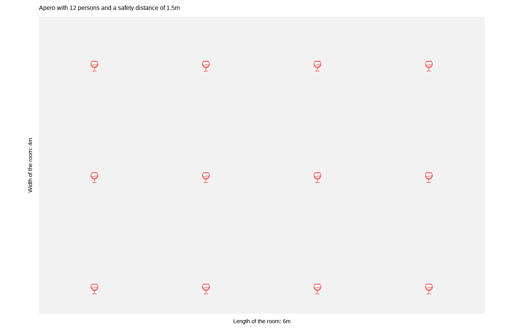

The {apero} package has three purposes. The last one of course is purely recreational and not at all serious.
library(apero)
x <- apero()
summary(x)
#> The apero takes place in a 6m x 4m room and the safety distance is 1.5m.
#> A whopping 12 guests are here (incl. you). Nice apero so far!
#> There will be 66 clinks. Poor glasses...
plot(x)
plot(x, emo = "wine_glass", color = "red")
x <- apero(room_length = 2, room_width = 1)
summary(x)
#> The apero takes place in a 2m x 1m room and the safety distance is 1.5m.
#> Oh no, you are all alone - the room is simply too small!
#> At least you are not at risk catching a virus...
#> There won't be any clink. Lucky glass...
plot(x)